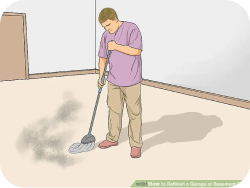
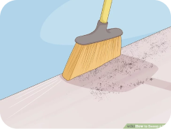
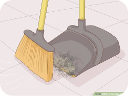

Măturat
Haideți să învățăm cum să măturăm pe jos.
Ai nevoie de:
Pasul 1:
Pentru a mătura, va trebui să te folosești de ambele măini când ții mătura. Una dintre mâini o poziționezi mai sus, iar cealaltă mai jos.

Pasul 2:
Mai departe, începi să mături pe jos și aduni cu mătura toată mizeria de pe jos într-un singur loc.

Pasul 3:
Odată ce ai făcut acest lucru, vei lua într-o mână fărașul, pe care îl ții ușor înclinat, iar cu cealaltă mână în care ții mătură, vei aduce tot ce s-a adunat de pe jos în făraș.
